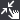

Veranstaltungen in der Geste Ereigniskategorie wird ausgelöst, sobald GameMaker Studio 2 eine „Geste“ von der Maus oder einem Touchscreen-Ereignis erkennt (während diese Gestenereignisse speziell für den mobilen Einsatz konzipiert sind, können sie auch auf andere Ziele verwendet werden, um die Maus zu erkennen, obwohl sie in diesem Fall nicht mehrere Berührungen erkennen können). Das Ziel des Gesten-Systems besteht darin, Eingaben auf einer höheren Ebene als die direkten Lesefunktionen der Maus zu versuchen und zu erkennen, und soll die Implementierung häufig verwendeter Eingaben auf berührungsbasierten Geräten vereinfachen.
Sie können wählen, entweder Instanz Gesten oder globale Gesten zu erkennen, wo beispielsweise Gestenereignisse werden nur dann ausgelöst werden, wenn die Anfangs-touch / Klicke auf einer Instanz im Raum ist. Beachten Sie, dass die Instanz über eine gültige Kollisionsmaske verfügen muss (weitere Informationen finden Sie in den Abschnitten Der Sprite-Editor - Kollisionsmaske und Der Objekt-Editor - Kollisionsmaske ), damit dieses Ereignis ausgelöst wird. Globale Ereignisse werden jedoch durch Berühren / Klicken an einer beliebigen Stelle innerhalb des Spielzimmers und für alle Fälle ausgelöst, bei denen das Ereignis vorliegt.
Wenn ein Gestenereignis erkannt wird, löst es eines oder mehrere der verfügbaren Unterereignisse aus, und das ausgelöste Unterereignis hängt von der Art der erkannten Geste ab. In jedem Fall wird jedoch eine DS-Map für Sie erstellt und in der integrierten Variablen gespeichert event_data. Welche Schlüssel zur Verfügung stehen, hängt von der Art des Ereignisses ab, in dem das Ereignis erstellt wurde, und wird in jedem der folgenden Unterabschnitte angezeigt.
Es ist erwähnenswert, dass, wenn Sie mehrere Instanzen unter der berührten Position haben und alle ein Gestenereignis haben, alle von ihnen ausgelöst werden, nicht nur die "oberste" Instanz. Beachten Sie außerdem, dass bei der Verwendung mehrerer Ansichten und Ziehen einer Instanz die zurückgegebenen Werte auf der Ansicht basieren, in der Sie sich beim ersten Berühren / Klicken befanden. Dies gilt für alle nachfolgenden Ereignisse in dieser Geste für diese Instanz. Wenn Sie also eine Instanz in einer Ansicht berühren und ziehen und dann die Berührung in einer anderen Ansicht freigeben, werden Werte relativ zu der ursprünglichen Ansicht zurückgegeben, in der die Geste zuerst erkannt wurde.
Die Ereignisse "Tippen", "Ziehen" und "Streichen" basieren alle auf einem einzigen Tastendruck oder Mausklick auf dem Bildschirm und dem event_data DS Map enthält die folgenden Schlüssel:
Schlüssel Wert Beschreibung "gesture"
Dies ist ein ID-Wert, der für die gerade ausgeführte Geste eindeutig ist. Auf diese Weise können Sie die verschiedenen Teile von mehrteiligen Gesten (z. B. Start ziehen, Ende ziehen und ziehen) miteinander verknüpfen."touch"
Dies ist der Index der Berührung, die für die Geste verwendet wird. Im Allgemeinen beginnt dieser Wert bei 0 und erhöht sich für jeden Finger, der gedrückt gehalten wird, und wird dann auf 0 zurückgesetzt, wenn alle Finger entfernt werden. Wenn der Benutzer jedoch den Bildschirm an einer anderen Stelle berührt, wenn dieses Ereignis durch eine andere Berührung ausgelöst wird, dann der Wert wird größer als 0 sein."posX"
Dies ist die Raumposition X der Berührung."posY"
Dies ist die Raum-Y-Position der Berührung."rawposX"
Dies ist die ungefähre X-Position des Berührungsbereichs (entspricht der Mausposition mithilfe von) device_mouse_raw_x() )."rawposY"
Dies ist die ungefähre Y-Position des Berührungsbereichs (entspricht der Mausposition mit) device_mouse_raw_y() )."guiposX"
Dies ist die X-Position des Berührungspunktes (entspricht der Mausposition mit) device_mouse_x_to_gui() )."guiposY"
Dies ist die Y-Position des Berührungspunkts (entspricht der Mausposition mit) device_mouse_y_to_gui() )."diffX"
Dies ist die Raum-X-Differenz zwischen der Position der aktuellen Berührung und der Position der letzten Berührung in dieser Geste."diffY"
Dies ist die Raum-Raum-Y-Differenz zwischen der Position der aktuellen Berührung und der Position der letzten Berührung in dieser Geste."rawdiffX"
Dies ist die reine X-Differenz zwischen der Position der aktuellen Berührung und der Position der letzten Berührung in dieser Geste."rawdiffY"
Dies ist die reine Y-Differenz zwischen der Position der aktuellen Berührung und der Position der letzten Berührung in dieser Geste."guidiffX"
Dies ist die Gui-Space-X-Differenz zwischen der Position der aktuellen Berührung und der Position der letzten Berührung in dieser Geste."guidiffY"
Dies ist die Gui-Space-Y-Differenz zwischen der Position der aktuellen Berührung und der Position der letzten Berührung in dieser Geste."viewstartposX"
Dies ist die Startposition für Raum X der aktuellen Geste."viewstartposY"
Dies ist die Raum Y-Startposition der aktuellen Geste."rawstartposX"
Dies ist die rohe X-Startposition der aktuellen Geste."rawstartposY"
Dies ist die rohe Y-Startposition der aktuellen Geste."guistartposX"
Dies ist die X-Startposition der aktuellen Geste."guistartposY"
Dies ist die Y-Startposition der aktuellen Geste."isflick"
Nur im Drag-End-Ereignis verfügbar. Dieser Wert wird auf 1 gesetzt, wenn das Ende des Ziehens als Streifen erkannt wird. Dies bedeutet, dass Sie kein separates Flick-Ereignis benötigen, wenn Sie trotzdem mit dem Ziehen arbeiten.Das Tap- Ereignis wird ausgelöst, wenn eine Instanz berührt oder angeklickt wurde oder wenn es sich um ein globales Ereignis handelt, wenn das Spiel eine Berührung oder einen Klick an eine beliebige Stelle im Raum registriert. Ein Tippen wird als schnelles Berühren und Loslassen betrachtet. Wenn die Berührung zu lange dauert, wird dies als Ziehen betrachtet (und die Drag-Gestenereignisse anstelle des Tippen-Ereignisses auslösen). Dieses Ereignis generiert eine event_data DS-Karte, mit der Sie Informationen über das Ereignis erhalten können. Zum Beispiel:
Ereignis erstellen
x_goto = x;
y_goto = y;Tippen Sie auf Ereignis
x_goto = event_data[? "posX"];
y_goto = event_data[? "posY"];Schritt Ereignis
var _pd = point_distance(x, y, x_goto, y_goto);
move_towards_point(x_goto, y_goto, clamp(_pd, 0, 5);
Der obige Code erkennt ein Antippen auf dem Bildschirm und ermittelt dann die Position des Antippen, um die Instanz an diese Position zu verschieben. Wenn Sie eine längere oder kürzere Antipperkennungszeit wünschen, können Sie diese mit der Funktion einstellen gesture_drag_time. Dadurch wird die Zeit zwischen der anfänglichen Erkennung und dem Ziehen des Antippen eingestellt. Setzen Sie ihn auf einen höheren Wert, um die Erfassungserkennung länger oder niedriger zu machen, um sie kürzer zu machen (der Wert ist in Sekunden und der Standardwert ist 0,16).
Das Double Tap- Ereignis wird ausgelöst, wenn eine Instanz zweimal kurz hintereinander berührt oder angeklickt wurde (oder - wenn es sich um ein globales Ereignis handelt - wenn das Spiel zwei schnelle Berührungen oder Klicks irgendwo im Raum registriert). Ein Doppeltipp wird als zwei schnelle Berührungen und Entriegelungen betrachtet, aber wenn eine der Berührungen zu lange dauert, wird dies als Ziehen betrachtet (und die Drag-Gestenereignisse anstelle des Doppeltippereignisses auslösen). Dieses Ereignis generiert eine event_data DS-Karte, mit der Sie Informationen über das Ereignis erhalten können. Zum Beispiel:
Ereignis erstellen
x_goto = x;
y_goto = y;Doppeltippen Sie auf Ereignis
instance_destroy();
Der obige Code erkennt einfach ein doppeltes Antippen und zerstört dann die Instanz. Beachten Sie, dass Sie die Zeit zwischen den Antippen einstellen können, um ein doppeltes Antippen mit der Funktion auszulösen gesture_double_tap_time (mit einem Standardwert - in Sekunden - von 0,16) und Sie können mit der Funktion auch den Abstand für die Erkennung zwischen Abgriffen einstellen gesture_double_tap_distance (Wenn ein zweiter Tap außerhalb dieser Entfernung erkannt wird, wird dies als regelmäßiges Tap-Ereignis betrachtet).
Das Drag-Start- Ereignis wird ausgelöst, wenn der Benutzer eine Berührung oder einen Klick beibehält, ohne es loszulassen. Es wird einmal ausgelöst, wenn eine festgelegte Zeit nach der ersten Berührung vergangen ist. Dies ist standardmäßig 0,16 Sekunden (obwohl Sie diese Funktion mit der Funktion auf einen anderen Wert in Sekunden einstellen können) gesture_drag_time ). Nachdem dieses Ereignis ausgelöst wurde und der Benutzer einen Tastendruck gedrückt hat, wird das Ziehen- Ereignis bei jedem Schritt ausgelöst, bis der Tastendruck ausgelöst wurde. Dieses Ereignis generiert eine event_data DS-Karte, mit der Sie Informationen über das Ereignis erhalten können. Zum Beispiel:
Ereignis erstellen
drag_offsetX = 0;
drag_offsetY = 0;Startereignis ziehen
drag_offsetX = x - event_data[?"posX"];
drag_offsetY = y - event_data[?"posY"];
Der obige Code verwendet das Drag-Start-Ereignis, um die Position des Touch / Click-Objekts zu ermitteln und einen Versatzwert für die X- und Y-Achse festzulegen. Dies kann dann verwendet werden, wenn Sie die Instanz ziehen, um sicherzustellen, dass sie nicht zu der Position "springt", an der der Touch / Click erkannt wurde (siehe das Ereignis Ziehen, um eine Fortsetzung dieses Beispiels zu erhalten).
Das Ziehen Ereignis wird nach dem Ziehen Startereignis ausgelöst, und wird für jeden Schritt ausgelöst werden, dass der Benutzer die Berührung unterhält / klicken Sie auf die Instanz (oder dem Bildschirm, wenn es sich um ein globales Ereignis ist) und bewegt sich mehr als die definierte ziehen Schwelle. Diese Entfernung beträgt standardmäßig 0,1 Zoll, kann aber mit der Funktion eingestellt werden gesture_drag_distance. Wenn keine Bewegung vorhanden ist oder die Bewegung unter dem definierten Schwellenwert liegt, wird das Ereignis nicht ausgelöst. Dieses Ereignis generiert eine event_data DS-Karte, mit der Sie Informationen über das Ereignis erhalten können. Zum Beispiel:
Ereignis erstellen
drag_offsetX = 0;
drag_offsetY = 0;Startereignis ziehen
drag_offsetX = x - event_data[?"posX"];
drag_offsetY = y - event_data[?"posY"];Ereignis ziehen
x = event_data[?"posX"] + drag_offsetX;
y = event_data[?"posY"] + drag_offsetY;
Der Beispielcode oben verwendet die Offset - Variablen im Drag Startereignis auf die Instanz zu bewegen, wenn das Ziehen Ereignis ausgelöst wird.
Das Drag-End- Ereignis wird ausgelöst, wenn der Benutzer das Berühren / Klicken der Instanz (oder des Bildschirms, wenn das Ereignis global ist) loslässt. Dieses Ereignis generiert eine event_data DS-Karte, die Sie dann verwenden können, um Informationen über das Ereignis zu erhalten. In diesem Fall hat die Karte jedoch einen zusätzlichen Schlüssel: " isflick "Flick wird als die Entfernung pro Sekunde berechnet, über die der Widerstand aufgetreten ist, und der Wert für" isflick "Schlüssel wird sein true wenn es größer als der definierte Abstand pro Sekunde ist, oder false Andernfalls. Beachten Sie, dass der Standardwert 2 Zoll pro Sekunde ist, Sie können ihn jedoch mit der Funktion auf einen anderen Wert einstellen gesture_flick_speed. Beachten Sie auch, dass es ein dediziertes Flick- Ereignis gibt, das auch ausgelöst wird, wenn " isflick "Variable ist true. Ein Anwendungsbeispiel wäre:
Ereignis erstellen
flickVelX = 0.0;
flickVelY = 0.0;Endereignis ziehen
isFlick = event_data[?"isflick"];
if (isFlick)
{
flickVelX = event_data[?"diffX"];
flickVelY = event_data[?"diffY"];
}
else
{
flickVelX = 0;
flickVelY = 0;
}Schritt Ereignis
x += flickVelX;
y += flickVelY;
flickVelX *= 0.7;
flickVelY *= 0.7;
Der obige Code wird einfach die Differenz in der X- und Y - Position des letzten Ziehen - Ereignis und dem aktuellen Ziehen Endereignis, und wenn die Bewegung größer als die flick Schwelle gewesen ist, setzt es einige Variablen, die den Einsatz in die Bewegung der Instanz in der liegen Schritt Ereignis.
Das Flick- Ereignis wird nur ausgelöst, wenn ein Tastendruck gehalten, gezogen und wieder losgelassen wird und der Abstand zwischen der letzten Ziehposition und der Freigabeposition größer als 2 Zoll pro Sekunde ist (dies ist die Standardeinstellung, die jedoch geändert werden kann.) mit der Funktion gesture_flick_speed ). Dieses Ereignis generiert eine event_data DS-Karte, mit der Sie Informationen über das Ereignis erhalten können. Zum Beispiel:
Ereignis erstellen
flickVelX = 0.0;
flickVelY = 0.0;Flick-Event
flickVelX = event_data[?"diffX"];
flickVelY = event_data[?"diffY"];Schritt Ereignis
x += flickVelX;
y += flickVelY;
flickVelX *= 0.7;
flickVelY *= 0.7;
Der obige Code ruft einfach die Differenz der x- und y-Position des letzten Drag- Events und des aktuellen Flick- Events ab. Wenn die Bewegung größer als der Flick-Schwellenwert war, werden einige Variablen festgelegt, die zum Verschieben der Instanz im Schritt verwendet werden Veranstaltung.Die "Pinch" -Ereignisse basieren auf zwei Berührungen des Bildschirms des Geräts, der auf einmal erkannt wird, wobei einer (oder beide) sich mehr als eine bestimmte Entfernung bewegt haben. Der Bewegungswinkel der Berührungen zusammen mit der Bewegung jeder Berührung bestimmt die Erkennung eines Pinch- oder Rotate-Ereignisses, wobei (im Falle des Pinch-Ereignistyps ):
- Wenn sich eine der Berührungen nicht bewegt, muss sich die andere innerhalb eines Schwellenwertwinkels (der über die Funktionen eingestellt werden kann) auf sie zu oder von ihr weg bewegen gesture_pinch_angle_towards() und - gesture_pinch_angle_away() ).
- Wenn sich beide Berührungen bewegen, müssen ihre Geschwindigkeiten in ungefähr entgegengesetzten Richtungen sein, und es wird auch die gleiche Winkelschwellwertprüfung durchgeführt, um sicherzustellen, dass sich die Berührungen in ungefährer Ausrichtung bewegen.
Wenn zwei Berührungen und eine Bewegung mit den oben genannten Kriterien erkannt werden, wird ein Pinch-Ereignis ausgelöst und in jedem der Ereignisse das event_data Die DS-Map wird mit den folgenden Tasten gefüllt:
Schlüssel Wert Beschreibung "gesture"
Dies ist ein ID-Wert, der für die gerade ausgeführte Geste eindeutig ist. Auf diese Weise können Sie die verschiedenen Teile von mehrteiligen Gesten (z. B. Start ziehen, Ende ziehen und ziehen) miteinander verknüpfen."touch1"
Dies ist der Index der ersten Berührung, die als Teil der Pinch-Geste verwendet wird. Im Allgemeinen ist dies 0, aber wenn der Benutzer den Bildschirm an einer anderen Stelle berührt, wenn dieses Ereignis durch eine andere Berührung ausgelöst wird, ist der Wert größer als 0."touch2"
Dies ist der Index der zweiten Berührung, die als Teil der Pinch-Geste verwendet wird. Im Allgemeinen ist dies 1 mehr als der Wert für touch1, es kann jedoch auch ein anderer Wert sein, abhängig von der Anzahl der an anderen Stellen erkannten Berührungen."posX1"
Dies ist die Raumposition X der ersten Berührung."posY1"
Dies ist die Raum-Y-Position der ersten Berührung."rawposX1"
Dies ist die ungefähre X-Position des Fensterbereichs der ersten Berührung (entspricht der Mausposition mithilfe von) device_mouse_raw_x() )."rawposY1"
Dies ist die ungefähre Y-Position des Fensterbereichs der ersten Berührung (entspricht der Mausposition mithilfe von) device_mouse_raw_y() )."guiposX1"
Dies ist die X-Position des Gui-Raums der ersten Berührung (entspricht der Mausposition mithilfe von) device_mouse_x_to_gui() )."guiposY1"
Dies ist die Y-Position der zweiten Berührung (entspricht der Mausposition mithilfe von) device_mouse_y_to_gui() )."posX2"
Dies ist die Raumposition X der zweiten Berührung."posY2"
Dies ist die Raum-Y-Position der zweiten Berührung."rawposX2"
Dies ist die ungefähre X-Position des Fensterbereichs der ersten Berührung."rawposY2"
Dies ist die ungefähre Y-Position des Fensterbereichs der zweiten Berührung."guiposX2"
Dies ist die X-Position des Gui-Raums der zweiten Berührung."guiposY2"
Dies ist die Y-Position der zweiten Berührung."midpointX"
Die X-Position des Mittelpunkts zwischen den beiden Berührungen im Raum."midpointY"
Die Y-Position des Mittelpunkts zwischen den beiden Berührungen im Raum."rawmidpointX"
Dies ist die rohe X-Position des Fensterbereichs im Mittelpunkt."rawmidpointY"
Dies ist die ungefähre Y-Position des Fensterbereichs des Mittelpunkts."guimidpointX"
Dies ist die Gui-Raum-X-Position des Mittelpunkts."guimidpointY"
Dies ist die Gui-Raum-Y-Position des Mittelpunkts."relativescale"
Dies ist ein Größenunterschied im Vergleich zum letzten Ereignis in dieser Geste (bei Pinch-In- Ereignissen ist dies immer kleiner als 1,0, während es bei Pinch-Out- Ereignissen immer größer als 1,0 ist)."absolutescale"
Dies ist die Skala im Vergleich zu dem Ort, an dem sich die Finger befanden, als die Geste begann (wenn sich also der Abstand zwischen den Fingern halbiert hat, ist dies 0,5, während sich der Abstand verdoppelt hat, beträgt er 2,0).Das Pinch-Start- Ereignis wird ausgelöst, wenn eine Instanz (oder der Bildschirm, wenn das Ereignis global ist) von zwei "Fingern" berührt wurde (und die Berührung beibehalten wird) und dann einer oder beide der "Finger" bewegt werden. Wenn sich die Berührungen mehr oder weniger voneinander entfernen als der Mindestprüfabstand (standardmäßig 0,1 Zoll), kann dieser Wert jedoch mit der Funktion eingestellt werden gesture_pinch_distance ) und der Winkel zwischen ihnen liegt innerhalb des definierten Werts (der Standardwert ist 45 °, kann aber mit eingestellt werden) gesture_pinch_angle_towards() und - gesture_pinch_angle_away() ), wird ein Pinch-Start- Event ausgelöst. In diesem Fall können Sie Variablen festlegen oder das Positionsdatum zur späteren Verwendung speichern. Zum Beispiel:
Prise Startereignis
pinching = true;
pinch_x = event_data[? "midpointX"]; pinch_y = event_data[? "midpointY"];
Der obige Code erkennt eine Prise und speichert die Mittelpunktposition für diese Prise.
Die Ereignisse Pinch In und Pinch Out werden bei jedem Schritt ausgelöst, bei dem der Abstand zwischen den beiden Berührungen, aus denen der Pinch besteht, den Mindestschwellenwert überschreitet (standardmäßig auf +/- 0,1 Zoll eingestellt, Sie können ihn jedoch mit der Funktion ändern gesture_pinch_distance ). Wenn sich die Quetschbewegung nicht bewegt, werden diese Ereignisse nicht ausgelöst. Diese Ereignisse erzeugen eine event_data DS-Karte, mit der Sie Informationen über das Ereignis erhalten können. Zum Beispiel:
Globales Pinch-In / -Pin-Out-Ereignis
var _scale = event_data[? "relativescale"];
var _w = camera_get_view_width(view_camera[0]);
var _h = camera_get_view_height(view_camera[0]);
var _x = camera_get_view_x(view_camera[0]) + (_w / 2);
var _y = camera_get_view_y(view_camera[0]) + (_h / 2);
_w *= _scale;
_h = _w * (room_height / room_width);
_x -= _w / 2;
_y -= _h / 2;
camera_set_view_pos(view_camera[0], _x, _y);
camera_set_view_size(view_camera[0], _w, _h);
Der obige Code skaliert die Ansicht basierend auf der relativen Skala der Quetschberührungen.
Das Pinch End- Ereignis wird ausgelöst, wenn der Benutzer eine oder beide Berührungen vom Gerät löst. Diese Ereignisse erzeugen eine event_data DS-Karte, mit der Sie Informationen über das Ereignis erhalten können. Zum Beispiel:
Prise Endereignis
var _pinchx = event_data[? "midpointX"]; var _pinchy = event_data[? "midpointY"]; var _w = camera_get_view_width(view_camera[0]);
var _h = camera_get_view_height(view_camera[0]);
var _x = _pinchx - (_w / 2);
var _y = _pinchy - (_h / 2);
camera_set_view_pos(view_camera[0], _x, _y);
Der obige Code legt fest, dass die Ansichtsposition auf den Mittelpunkt der beiden Berührungen zentriert ist, aus denen sich die Prise zusammensetzt, wenn die Berührungen losgelassen werden.Die "Rotate" -Ereignisse basieren auf zwei Berührungen des Bildschirms des Geräts, der auf einmal erkannt wird, und bei denen innerhalb einer bestimmten Zeit eine konstante Winkeldrehung zwischen den beiden aufgetreten ist. Der Bewegungswinkel der Berührungen zusammen mit der Bewegung jeder Berührung bestimmt die Erkennung eines Pinch- oder Rotate-Ereignisses, wobei (im Fall des Typs Rotate Event ):
- Zwei Berührungen müssen für eine bestimmte Mindestzeit gedrückt werden (die Standardzeit ist 0,16 Sekunden, Sie können sie jedoch mit der Funktion ändern.) gesture_rotate_time() ).
- Innerhalb dieser minimalen Zeitspanne müssen sie sich in eine konsistente Richtung drehen (wenn sich die Drehrichtung innerhalb dieser Zeit ändert, wird keine Drehung gestartet).
- Der Drehbetrag muss den minimalen Schwellenwinkel überschreiten (der standardmäßig auf 5 ° eingestellt ist, kann aber mit der Funktion geändert werden) gesture_rotate_angle() ).
Wenn zwei Berührungen und eine Bewegung mit den oben genannten Kriterien erkannt werden, wird ein rotierendes Ereignis ausgelöst und in jedem der Ereignisse das event_data Die DS-Map wird mit den folgenden Tasten gefüllt:
Schlüssel Wert Beschreibung "gesture"
Dies ist ein ID-Wert, der für die gerade ausgeführte Geste eindeutig ist. Auf diese Weise können Sie die verschiedenen Teile von mehrteiligen Gesten (z. B. Start ziehen, Ende ziehen und ziehen) miteinander verknüpfen."touch1"
Dies ist der Index der ersten Berührung, die als Teil der Pinch-Geste verwendet wird. Im Allgemeinen ist dies 0, aber wenn der Benutzer den Bildschirm an einer anderen Stelle berührt, wenn dieses Ereignis durch eine andere Berührung ausgelöst wird, ist der Wert größer als 0."touch2"
Dies ist der Index der zweiten Berührung, die als Teil der Pinch-Geste verwendet wird. Im Allgemeinen ist dies 1 mehr als der Wert für touch1, es kann jedoch auch ein anderer Wert sein, abhängig von der Anzahl der an anderen Stellen erkannten Berührungen."posX1"
Dies ist die Raumposition X der ersten Berührung."posY1"
Dies ist die Raum-Y-Position der ersten Berührung."rawposX1"
Dies ist die ungefähre X-Position des Fensterbereichs der ersten Berührung (entspricht der Mausposition mithilfe von) device_mouse_raw_x() )."rawposY1"
Dies ist die ungefähre Y-Position des Fensterbereichs der ersten Berührung (entspricht der Mausposition mithilfe von) device_mouse_raw_y() )."guiposX1"
Dies ist die X-Position des Gui-Raums der ersten Berührung (entspricht der Mausposition mithilfe von) device_mouse_x_to_gui() )."guiposY1"
Dies ist die Y-Position der zweiten Berührung (entspricht der Mausposition mithilfe von) device_mouse_y_to_gui() )."posX2"
Dies ist die Raumposition X der zweiten Berührung."posY2"
Dies ist die Raum-Y-Position der zweiten Berührung."rawposX2"
Dies ist die ungefähre X-Position des Fensterbereichs der ersten Berührung."rawposY2"
Dies ist die ungefähre Y-Position des Fensterbereichs der zweiten Berührung."guiposX2"
Dies ist die X-Position des Gui-Raums der zweiten Berührung."guiposY2"
Dies ist die Y-Position der zweiten Berührung."pivotX"
Die X-Position des Drehpunkts im Raum."pivotY"
Die Y-Position des Drehpunkts im Raum."rawpivotX"
Dies ist die rohe Position des Fensterraums X des Drehpunkts."rawpivotY"
Dies ist die Roh-Y-Position des Drehpunkts."guipivotX"
Dies ist die gui-Position X des Drehpunkts."guipivotY"
Dies ist die Gui-Raumposition Y des Drehdrehpunkts."relativeangle"
Dies ist der Rotationsunterschied im Vergleich zum letzten Ereignis in dieser Geste, gemessen in Grad
"absoluteangle"
Dies ist der Winkelunterschied im Vergleich zu dem Ort, an dem sich die Finger befanden, als die Geste begann, gemessen in Grad. Wenn sich die Finger beispielsweise seit Beginn der Geste um einen Viertelkreis gedreht haben, beträgt dieser Wert je nach Drehrichtung 90 ° oder -90 °.Das Rotate Start- Ereignis wird ausgelöst, wenn eine Instanz (oder der Bildschirm, wenn das Ereignis global ist) von zwei "Fingern" berührt wurde (und die Berührung beibehalten wird) und dann einer oder beide der "Finger" von Anfang an gedreht werden Position. Die Drehung der Berührungen muss innerhalb einer kurzen Zeitspanne (standardmäßig 0,16 Sekunden) begonnen haben, sie kann jedoch mit der Funktion eingestellt werden gesture_rotate_time() ) und größer als die minimale Winkelschwelle sein (standardmäßig 5 °, dies kann jedoch mit der Funktion geändert werden.) gesture_rotate_angle() ). Wenn diese Prüfungen wahr sind, wird ein Rotate-Start- Ereignis ausgelöst, mit dem Sie Werte speichern oder Variablen festlegen können, die mit den restlichen Rotations-Ereignissen verwendet werden können. Zum Beispiel:
Ereignis erstellen
rotating = false;
view_a = camera_get_view_angle(view_camera[0]);Startereignis drehen
rotating = true;
Mit dem obigen Code werden lediglich einige Variablen für das Drehen der Ansichtskamera eingerichtet. Im Rotate Start-Ereignis wird eine davon festgelegt true.
Das Rotating- Ereignis wird bei jedem Schritt ausgelöst, bei dem der Bildschirm berührt wird, sofern die Bewegung größer als die minimale Winkelschwelle ist (standardmäßig 5 °, dies kann jedoch mit der Funktion geändert werden.) gesture_rotate_angle() ). Dieses Ereignis kann verwendet werden, um Variablen festzulegen und Instanzen zu bearbeiten, zum Beispiel:
Rotierendes Ereignis
var _relangle = event_data[?"relativeangle"];
var _a = camera_get_view_angle(view_camera[0]);
_a += _relangle;
camera_set_view_angle(view_camera[0], _a);
Der obige Code dreht die Kameraansicht abhängig von der Rotationsbewegung der Berührungen im Ereignis.
Das Rotate End- Ereignis wird ausgelöst, wenn eine (oder beide) Berührungen, aus denen sich die Geste zusammensetzt, vom Gerätebildschirm freigegeben werden. Dieses Ereignis kann verwendet werden, um Variablen festzulegen und Instanzen zu bearbeiten, zum Beispiel:
Endereignis drehen
rotating = false;
Schritt Ereignis
if !rotating
{
var _a = camera_get_view_angle(view_camera[0]);
var _adif = angle_difference(view_a, _a);
_a += median(-5, _adif, 5);
camera_set_view_angle(view_camera[0], _a);
}
Der obige Code verwendet das Rotate End-Ereignis, um zu erkennen, wann der Benutzer die Geste anhält und dann eine Variable festlegt. Diese Variable wird dann im Schrittereignis verwendet, um die Ansichtskamera zurück in ihre ursprüngliche Position zu drehen.